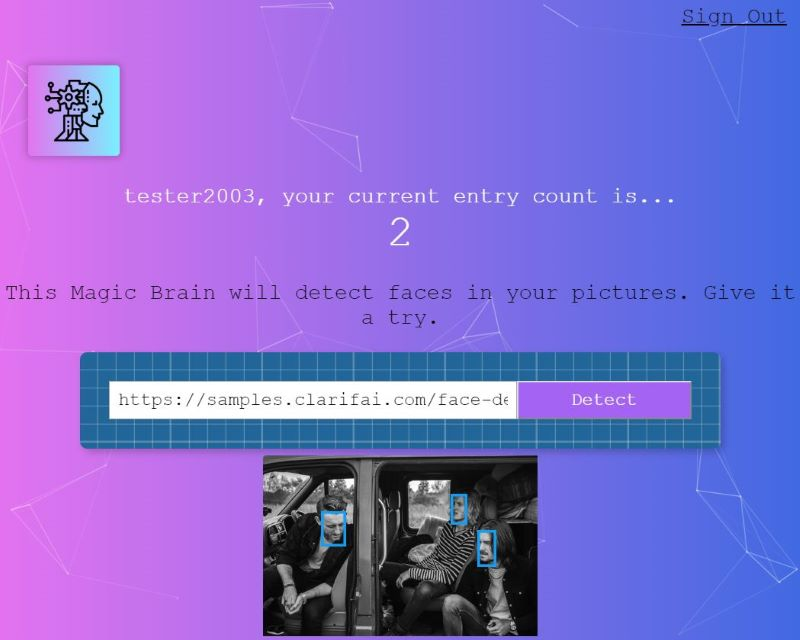
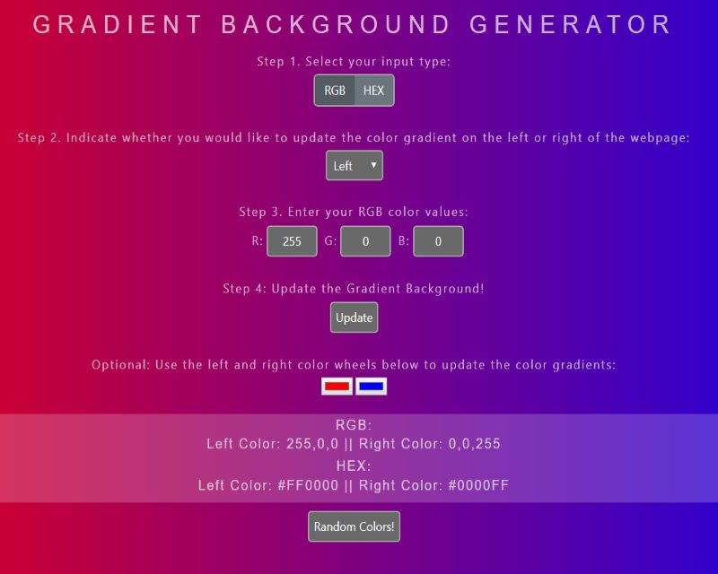
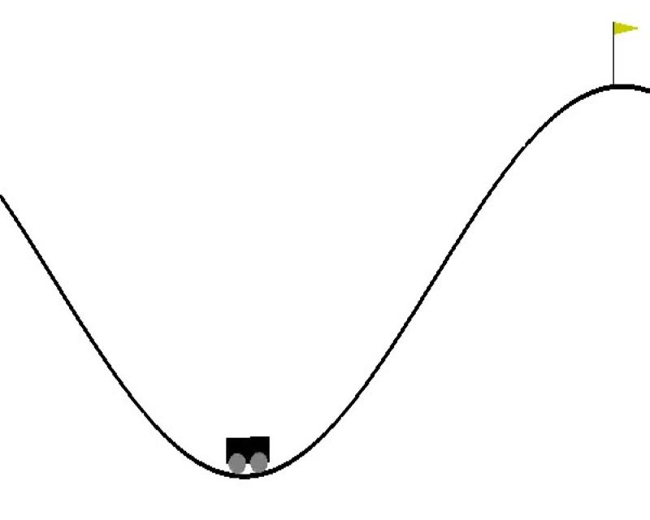
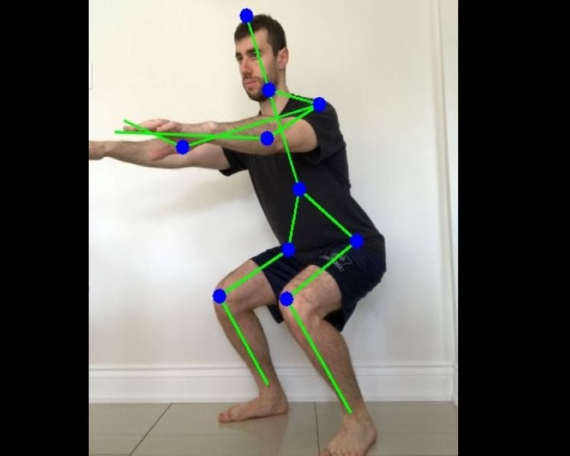
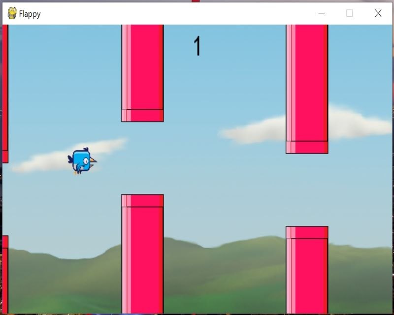

PROJECTS
Below are a list of personal projects and applications that I have worked on using various technologies.
Product Pitch: Live Fan Engagement
Pitched a feature idea to increase user engagement with the Spotify App. Included the user story, assumptions, research, metrics, KPIs, designs (wireframe and mockup) and engineering requirements.
Full Stack Web App: Bronaldinhos
Web app for my men’s league soccer team. The web app includes the team’s schedule, record, player stats, photos and a message board. Users are able to register accounts, sign in and customize their profile setting (eg. upload a profile photo). Utilized ReactJS front the frontend and NodeJS for the backend.
Full Stack Web App: Smart Brain
Full stack web application that detects faces from an input image URL using a face detection API. Users can register accounts, sign in, and the app will track the number of entries each user has submitted. Utilized ReactJS front the frontend and NodeJS for the backend.
JavaScript/HTML/CSS: Gradient Background Generator
Interactive gradient background generator webpage which will update the background color gradient based off input RGB and HEX color values and using using DOM manipulation. The webpage will also provide RGB and HEX conversion values.
Machine Learning (Python): MountainCar-v0
Designed a neural network in Python using the TensorFlow library for the MountainCar Environment from OpenAI Gym.
Computer Vision (Python): Squat Assesment
Squat assesment program that provides feedback comments for an input image of a human performing a squat to improve their squatting form.
OOP (Python): Flappy!
Developed a high-score game similar to the popular game "Flappy Bird" using the Pygame library. This project was designed using object-oriented programming (OOP).